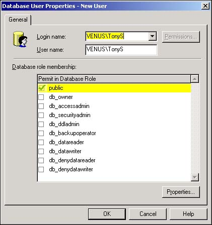

The logins that you created in How-To 11.5 or 11.6 provide access to SQL Server, but not to any databases within SQL Server. This is much like giving someone a key to a building, but not providing keys to offices within the building.
The fixed server role that you might have specified in How-To 11.7 gives the person rights to perform serverwide administrative tasks such as creating or modifying databases. Using the building analogy, this is something like giving an electrician permission to rewire or modify the electrical service within the building. However, neither of these settings actually grants access to databases within SQL Server. Before a user can access a SQL Server database (somewhat like entering a locked office in the building), he must be provided with the database user account.
I have been authenticated and logged into SQL Server and now I need to access data that is stored within a SQL Server database. Without a specific database user account, I am unable to access and use data that SQL Server manages.
Enterprise Manager provides the dialog boxes that are necessary to create user accounts in any of its databases. Be sure to add the user to every database that he requires. Otherwise, the user will not be able to use the data, run stored procedures, or otherwise access the database.
Simply logging in to SQL Server does not automatically establish a person's database identity. In other words, accessing SQL Server does not mean that SQL Server recognizes the person as a valid database user.
This is particularly true when Windows NT/2000 authentication is used. After all, this authentication mode means that anyone who logs in to Windows is able to access the database. SQL Server needs to know exactly who the person is and what data and database objects this person is allowed to access. A SQL Server user account is needed for each user or group of users who is accessing SQL Server.
Each SQL Server database maintains an internal registry of user accounts that are permitted into the database. This information is stored in the table named sysusers within the database. The account information travels with the database's MDF file and is backed up when the database is backed up.
Open Enterprise Manager and expand the Northwind database icon.
Right-click on the Users icon and select New Database User from the shortcut menu that appears. Alternatively, select New Database User from the Action menu. In either case, the Database User Properties dialog box opens (see Figure 11.15).

Select a user or group login from the drop-down list at the top of the Database User Properties dialog box. If desired, you can provide a different username for the user account. Normally, however, you'll want to avoid complications by using the default username.
Click the OK button to commit the new user account.
It is important to distinguish between a SQL Server login and a database user account. The SQL Server login simply allows a person to access SQL Server, but it does not provide access to databases. A database user account provides access to one and only one database that SQL Server manages. Each user, therefore, will need an account with each database he intends to use. This is why creating database user accounts for groups of users is much more efficient than adding user accounts for individual users.
Database user accounts can be established for individual users as well as groups. The Login name drop-down list in the User Account Properties dialog box contains all the SQL Server logins you have created.
The statement earlier that a user without a specific database account is unable to use the database is not entirely correct. SQL Server declines to default user accounts: guest and dbo.
The guest account is used whenever a user seeks access to the database in which he has no specific account. Under most situations, the SQL Server system administrator has severely limited the ability of the default user account to access a database within SQL Server. Exactly how this is done is explained in How-To 11.10.
The database owner (dbo) account owns all the objects that are created by anyone who is a member of the sysadmin fixed server role. You'll frequently see the dbo account listed as an object's owner simply because the database construction is most often left up to SQL Server's system administrators.